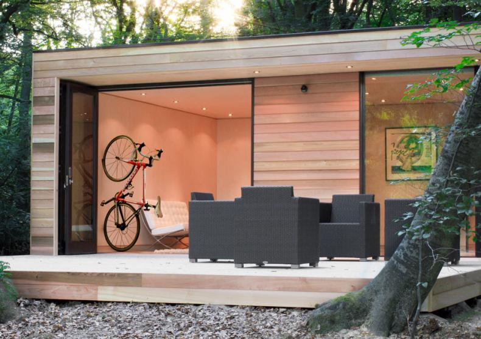
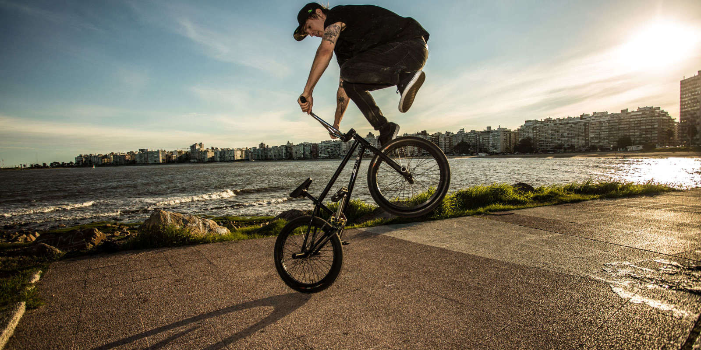

Ce să aleg?
În momentul în care ai decis să îți cumperi o bicicletă dar nu ai idee ce tip de bicicletă ți s-ar potrivi, trebuie să îți pui urmatoarele întrebări:
1 / 3

1) UNDE O VOI FOLOSI, ÎN ORAȘ? ÎN PĂDURE? PESTE TOT?
2 / 3

2) AM UNDE SĂ O DEPOZITEZ?
3 / 3

3) VOI ABUZA DE EA (TRUCURI, SĂRITURI, DROPPURI)?
❮
❯
În primul rând, dacă nu ai nevoie de bicicletă ca să mergi în pădure, îți sugerez una dintre cele de șosea. Dacă spațiul de depozitare este o problemă, bineînțeles îți recomand o bicicletă pliabilă.
Dacă totuși vrei să o folosești în oraș, dar din când în când vrei sa te bucuri și de natură, îți sugerez o bicicletă Mountain bike hardtail.
În cazul în care vrei să străbati trasee mai greu accesibile, bineînteles îți voi recomanda una de tip Full Suspension. Dar aici trebuie să te gandești, vrei doar să cobori, sau să și urci? În cazul în care vrei o bicicletă "multifunctionala" îți recomand una de tip XC/Enduro/Trail/All Mountain în functie de traseele pe care vrei sa le străbati.
Dacă îți doresti o bicicletă strict pentru coborâri, ițî recomand una de tip downhill.